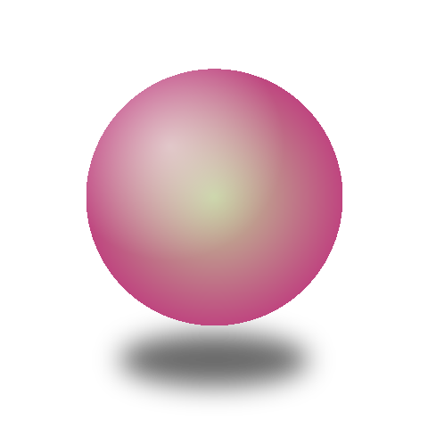

 渋谷コミュニティ
渋谷コミュニティ
ドラッグで 360°
entrance · hero
320ms · easeOutCubic cubic-bezier(.22,1,.36,1)
anatomy · 奥 → 手前
背景
サークル画像circle-NN · 新規
フォーカス中の投稿の circleImageUrl を全画面 cover。従来の地図背景に代えてサークルの世界観を敷く。可読性は暗 scrim 0.55＋縁ビネットで担保。
3D
3D オブジェクトobj-NN · 透過
中央に短辺×0.86 の正方領域（402幅→ 346px）。枠なし・透明背景。横ドラッグで 360° 回転（自動回転は停止）。
chrome
最小限minimal
上部左にサークル丸34＋名前、右に控えめな閉じる×。下部に360° ヒット（--text-3）のみ。背景タップ／×で 1 へ戻る。